Net-Experience-report Using_STMP2SendAEmail
使用telnet + QQ邮箱在命令行下发送邮件
整个活(后空翻)
前导
最近写C++和操作系统写腻歪了,来点活.
配置telnet
Windows11相当的智能,我们只需要打开控制面板:
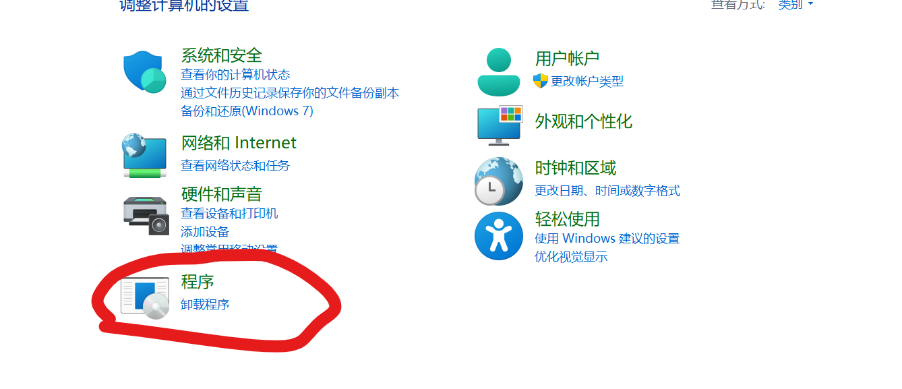
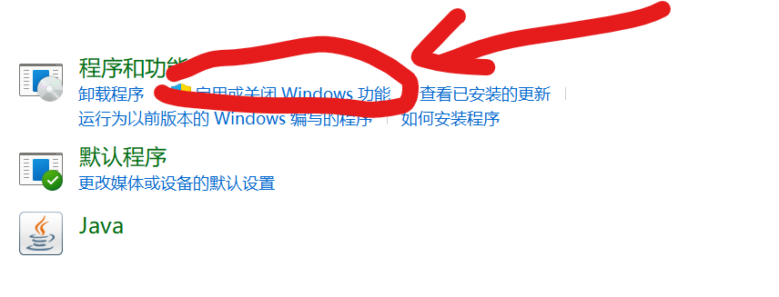
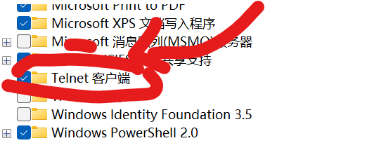
对,把这玩意勾上就好.如果你是第一次开,Windows就会准备好相关的文件.
打开QQ邮箱的SMTP服务
qq邮箱-> 设置->账户 -> 找到这些服务，开启SMTP服务.
以及,我们开启服务会收到一个授权码,请务必!请务必保存好!
login
现在火速前往cmd.或者PowerShell,只需要输入
telnet smtp.qq.com 25 25是端口号,也有人会要求你输入加密端口587,我的评价是:无所谓.
如果你发现telnet不认识,爬回去返回第一大步.
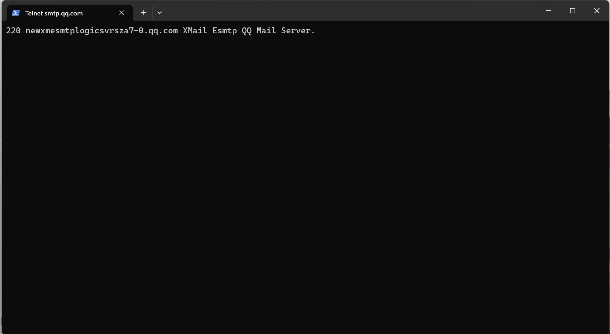
220是我们的状态码, 表示的是服务就绪.我们输入
helo qq.com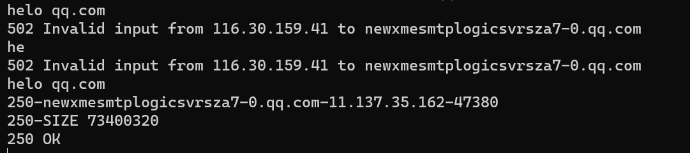
表示我们发出请求.
对了,我们的输入中,发现输错了就需要重新输入.退格是无用的:服务器会每时每刻接受我们的输入字符而不会撤回.
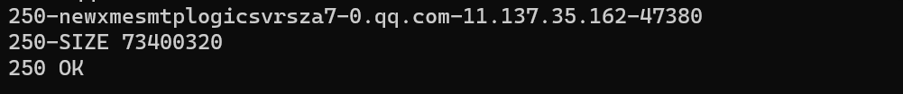
这个代表我们的链接成功
auth login 我们发出了登录账户的请求. 如果在这个步骤中发出了 502 错误,稍后尝试(也有可能你输错了,比如我整了auto login…)
这是什么意思? 334表示的是认证输入,就像我们需要输入账号和密码一样.事实上,这里的ASCII文字是使用base64编码了的.我们使用解码:
在网站：Base64 加密解密 - Base64.us
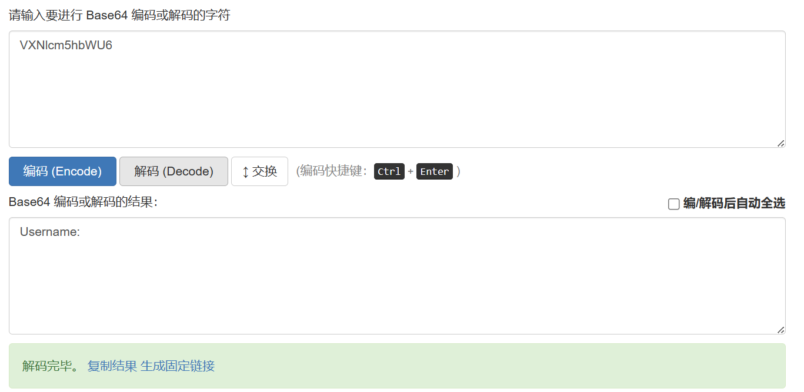
334 Username: 就是这样.
我把邮箱给出去—-但是务必注意是base64编码
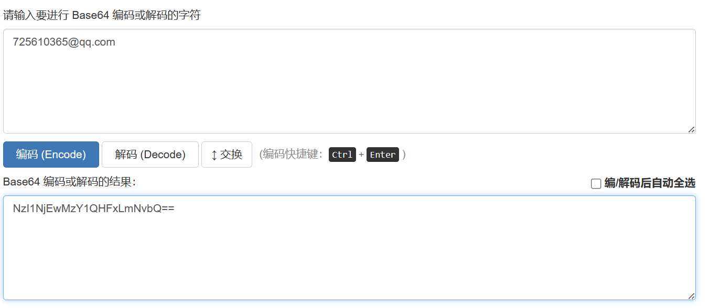
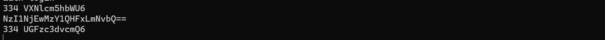

别急着输入你的QQ密码,首先, 我们要的是 base64编码,其次,要的是那个授权码!我们得吧授权码给编码后再输入
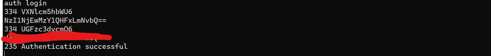
235表示认证成功.
注意！！我们在输入用户名和密码的时候如果打错字了，需要重来。退格之后空格是没用的，因为键盘每一次敲下都把数据传到了服务器上面，而服务器上面的呈现方式和我们所看到的是不一样的，所以这一步是最最最麻烦的。（包括在输入命令的时候也是一样，错了就要换行重输） 然后,我们可以开始操作了:
MAIL FROM与RCPT TO
MAIL FROM必须写自己所登录的邮箱名字，RCPT TO写收件人的邮箱名字。
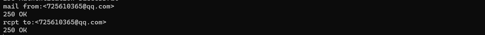
DATA
DATA表示的是我们预备好输入邮件内容

注意,要符合发送规范:
from:sender@qq.com
to:sendee@qq.com
subject:urSub
正文内容 sender, sendee换成自己的和对方的邮箱.
结束输入的方式,是单独开启一行打一个点.
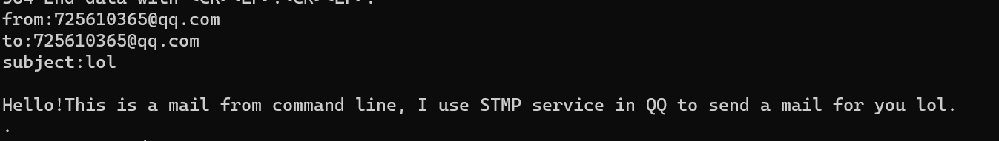
这个时候敲回车
发送成功!
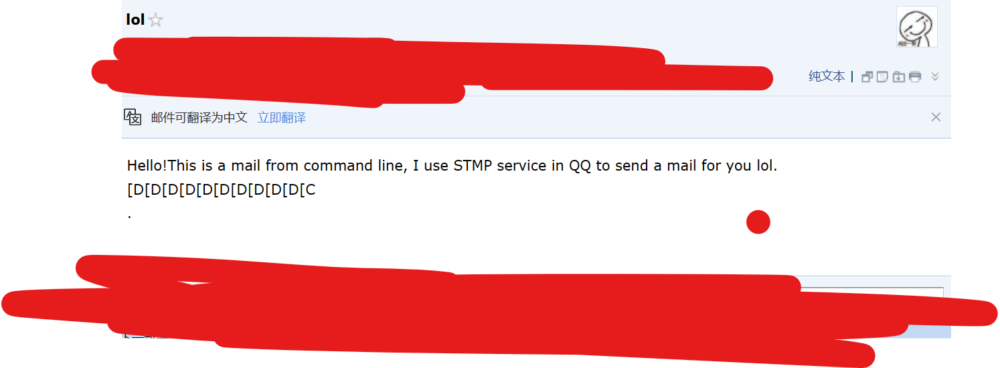